HOLISTIC ASTROLOGY
My personal approach to Astrology is both holistic and spiritual. Rooted in the principles of holism, this form of astrology embraces—physical, emotional, mental, and spiritual dimensions—and places each individual at the centre of their own evolutionary journey. In a world constantly searching for meaning, holistic astrology invites us to turn inward, to reconnect with ourselves through the rhythms of the sky and the cycles of life. Far from offering ready-made answers, it unfolds as a symbolic language illuminating the depths of the soul, beyond stereotypes and simplistic predictions.
Astrology and holism share a common vision of the universe as an interconnected system, where each part mirrors the greater whole, and where no element can be fully understood in isolation from the larger web to which it belongs.
Each natal chart is a living mandala that reveals an individual’s potential, strengths, tensions, and pathways to growth. I see each human being as a complete and evolving whole. in resonance with the great celestial cycles. From this expanded perspective, I invite you to discover that astrology is not merely descriptive, but a powerful practice of self-inquiry and personal development — one that resonates with holistic principles and invites us to integrate the various dimensions of our being in pursuit of harmony and wholeness. In doing so, we become active participants in our evolution, capable of transcending conditioning and fully exploring our unique potential.
Holistic astrology’s purpose is not only to predict events, but to help us welcome them, understand their deeper meaning, and navigate them consciously along our life path. It shines a light on our inner resources, aptitudes, and innate strengths, supporting us at each stage of our personal journey. Whether experiences and encounters are perceived as challenging or enriching, what truly matters is our ability to learn from them and integrate their lessons to grow and thrive.
This is a path of clarity and inner reconciliation — an invitation to live with greater purpose, inner fullness and alignment.